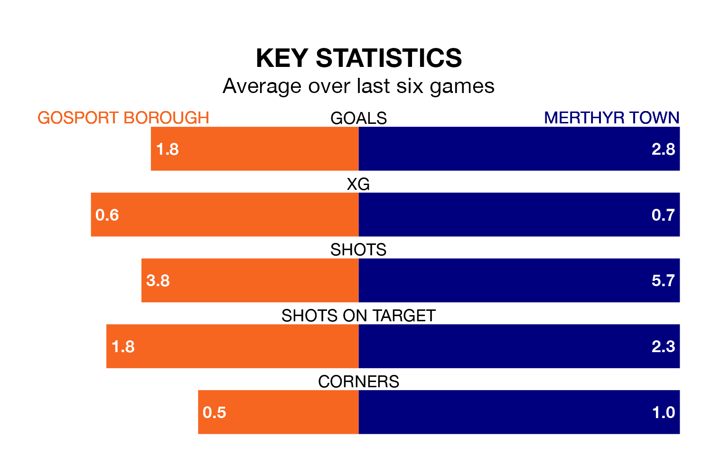

Two of Southern League Premier South's top sides face each other at Privett Park in Saturday's kick-off, when fourth-placed Gosport Borough host third-placed Merthyr Town.
Gosport have picked up 14 wins and six draws from 25 games so far this season, and sit three points below the visitors going into the 3pm match.
Merthyr, meanwhile, have won 16 and drawn three of 27, picking up 51 points.
With 60 goals in 27 games so far this season, Merthyr are the league's highest scorers with 2.2 goals per game. And they are conceding fewer than average, letting in 37 goals at a rate of 1.4 per game.
Gosport are also above average scorers, with 1.9 goals per game, compared to a league average of 1.7. They have conceded 1.0 goal per game.
In the last 10 years, Gosport and Merthyr have played each other on nine occasions. Gosport won five of them, Merthyr three, and they drew once.
On average, Gosport scored 2.2 goals and Merthyr 2.1 in those matches.
Their last meeting was on September 23, when Gosport won 4-1 away.
Borough are in mixed form in Southern League Premier South, with two wins and three draws from their last six games.
With three wins and a draw over that period, Town's form is slightly better – they have taken 10 points from 18, compared to the home team's nine.
Gosport's last match was on January 27, a 1-1 draw against AFC Totton.
Merthyr beat Didcot Town 4-0 last time out, also on January 27.
Updated: 10:03 (UTC), 30/01/24